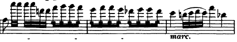

Introducción
En la historia de la música son numerosos los compositores que han elevado esta disciplina a la categoría de arte. De entre ellos Frederic Chopin y Claude Debussy destacan por su capacidad de innovación. De Chopin sobresalen su cromatismo en el piano, la variedad tonal que impregna su obra, así como su pluralidad de recursos. Este autor consiguió aunar el ritmo del folclore polaco con la sofisticación francesa plasmándolos en sus composiciones.
Tras la muerte de Chopin en 1849, el único compositor de esta época equiparable en tanto que su capacidad de innovación es Claude Debussy. Con él reaparecerá el elemento innovador como forma de expresión de las corrientes estéticas coetáneas, así, se catalogará al estilo musical del francés como impresionismo, en consonancia con la corriente pictórica del momento. Y es que la recreación de imágenes mentales a través de la sugerencia es el sello de identidad de Claude Debussy.
En este trabajo vamos a analizar dos obras del repertorio orquestal. La primera de ellas es el concierto nº2 de Chopin para piano y orquesta y la segunda de ellas es la suite orquestal arreglada por Büsser basada en la Petite suite para dos pianos de Debussy.
Primero vamos a estudiar brevemente el contexto histórico de ambos autores, seguidamente vamos a realizar un pequeño análisis formal para seguidamente comentar las dificultades de cada obra en sus pasajes orquestales para la sección de violín I.
Contexto histórico
Las tendencias musicales imperantes en el siglo XIX son el resultado y el rasgo definitorio de un contexto histórico, político, socioeconómico y cultural concreto. Por lo tanto, tal y como señala (Garzón Rubiano, 2016), la música debe ser entendida como una abstracción de la realidad, perteneciente a un periodo histórico y a una sociedad determinados.
A comienzos del siglo XIX asistimos al rechazo del racionalismo asentado durante la Ilustración (Jay Grout & Palisca, 1984). Este cambio ideológico estuvo sustentado por hechos como la Revolución francesa, la Revolución industrial, el establecimiento del libre comercio o la instauración de la democracia institucional, que se manifestaron en la creación de un nuevo sistema socioeconómico. Estos acontecimientos catalizaron el surgimiento de la burguesía como nueva clase social, provocando cambios en la mentalidad de los ciudadanos que afectaron a todos los ámbitos de la sociedad. El nacimiento del progresismo como filosofía burguesa y el auge económico motivado por la industria fueron las principales consecuencias de este proceso.
En cuanto a la producción técnica de instrumentos, la elaboración en masa de instrumentos conllevó una disminución del coste de fabricación, de tal manera que aumentó el número de personas que contaban con el suficiente poder adquisitivo para adquirirlos. También, debemos señalar que este aumento en la producción de instrumentos desembocó en la evolución de las técnicas de luthería.
Ejemplo de ello lo encontramos en el piano, herramienta muy demandada en el ámbito musical al ser un recurso fundamental para la docencia, la composición y la dirección. Por este motivo, los fabricantes de pianos destinaron su tiempo a perfeccionarlo y a reducir los costes de fabricación. Tal y como señala (Landolfi, 1997), de entre las optimizaciones que el piano presentó durante el siglo XIX destacan:
La mejora de la máquina a partir del mecanismo de doble repetición, gracias al cual aumentó la velocidad de ejecución del instrumento; otras nuevas características como: la disminución del escape de los martillos en el momento de tocar las cuerdas, la optimización de los pedales, la incrementación del número de octavas y el aumento de la resonancia, todas estas modificaciones transformaron el instrumento aproximándolo a lo que hoy conocemos como piano moderno.
Las nuevas posibilidades que ofrecía el piano atrajeron la atención de los músicos de la primera mitad del siglo XIX, invitándolos a experimentar en sus composiciones. Todo ello desembocó el en aumento de la producción musical destinada al piano y a la elaboración de un repertorio virtuoso.
En el plano musical, a principios del siglo XIX el espacio tradicionalmente reservado a la música en las cortes europeas comienza a desaparecer. En parte debido a la nueva independencia y libertad del músico respecto a sus mecenas y protectores que serían remplazados por la denominada tiranía del público. Si antes los compositores debían someterse a los gustos de la aristocracia ahora deberán amoldarse a las preferencias de las clases medias de las grandes ciudades. Algunos músicos como Liszt decidieron acatar las exigencias del público, realizando conciertos diarios, otros como Chopin (1810-1849) prefirieron el espacio íntimo y el aislamiento para sus composiciones. De esta manera, Chopin se alejó de la artificiosidad y de la vulgaridad del nuevo gusto, centrándose en el desarrollo de su estilo teniendo como referente compositivo a Mozart y Bach. Su intuición refinada, su desorbitada creatividad, su impecable técnica y las novedades que aplicó en los aspectos armónicos, explican su enorme influencia en grandes compositores posteriores como Wagner o Debussy (1862 – 1918). En cuanto a la temática de las composiciones de este periodo, nos encontramos ante el nacimiento de los nacionalismos, que se tradujo en el gusto por las melodías populares, la música patriótica y el folclore, característica fundamental del periodo romántico. En Chopin, las reminiscencias del folclore polaco se manifiestan en sus mazurcas y polonesas que se suscriben a esta línea de romanticismo.
No obstante, en Francia, durante el siglo XIX se empezó a constituir la identidad musical nacional, rivalizando en prestigio con la tradición alemana, sin llegar a imitarla. Chopin ejerció una gran influencia en el estilo de Debussy y, concretamente, en sus composiciones para piano. En oposición con las tendencias pro wagnerianas imperantes, Debussy optó por captar el alma de la música francesa, para ello rescató los clavecinistas barrocos, y a Chopin, que fue el primer músico romántico en rechazar la música de Beethoven. Las características románticas en la obra de Debussy se dibujan en su interés por lo exótico, el gusto por la antigüedad clásica e incluso el folclore. El sentido del tiempo así como la continuidad del discurso musical son dos de las aportaciones más valiosas de Debussy al piano romántico, sin olvidar sus innovaciones en el área de la armonía. Por último para cerrar este capítulo debemos señalar la importancia de Debussy en la aparición del impresionismo musical, cuyo principio fundamental se encuentra en la sugerencia más que en la definición, en el intento de dibujar en lugar de delimitar, hacer referencia a la respuesta emocional ante un objeto o suceso en lugar de describirlo.
Análisis formal y estético
En esta sección vamos a describir los elementos musicales de las dos piezas que estudiamos a continuación.
El concierto para piano nº2 de Chopin
Para analizar este concierto, nos hemos basado en la tesis de máster de (Erickson, 1974) donde compara cuatro conciertos de la era romántica para piano.: El concierto nº4 de Beethoven, el concierto nº2 de Chopin, el concierto en La menor de Schumann, y el concierto para piano de Brahms. Chopin compuso dos conciertos para piano, ambos son de la misma época, compuestos en Varsovia justo antes de irse a París. El pianista necesitaba varias piezas de concierto para poder asegurarse su futuro en la capital francesa1 . El concierto en Fa menor nº 2 Op.21 fue compuesto en 1829, antes que el concierto nº1 Op 11 compuesto en 1830. El retraso en la publicación se debe a la pérdida de los manuscritos de las partes orquestales. Se clasifica el tratamiento de la orquestación como frío acompañamiento (Dotsey, 2018). Sabemos que Chopin tomó como modelo a Hummel quien relegaba a la orquesta un papel secundario. En el período de 1827 a 1831, Chopin compuso seis grandes obras: las Variaciones Op.2, la Fantasía Op.13, el rondó de concierto Krakowiak Op.14, la gran Polonesa Op.22 y los dos conciertos para piano. El formato de análisis que seguimos es el propuesto en (Roca Arencibia, 2012) para simplificar el análisis, ofrecemos una tabla resumen con el análisis formal y armónico de cada movimiento. A continuación, pasamos a comentar el primer movimiento.
Análisis del primer movimiento
La siguiente tabla muestra la estructura del primer movimiento, que tiene forma sonata extendida, con una exposición orquestal y otra del piano.
La siguiente tabla analiza el desarrollo y la re exposición.

La introducción orquestal presenta el motivo x del tema A que se repute frecuentemente a lo largo del movimiento. El puente utiliza las síncopas y la repetición de ideas melódicas para incrementar su intensidad hasta llegar al relativo mayor, La bemol Mayor, el oboe y la flauta presentan el tema B en el relativo mayor (La b Mayor) precedido por el motivo x del tema A.
El resto de la orquestación, las cuerdas repiten esta misma melodía en el grupo cadencial de la exposición orquestal.
Tras esta coda, el piano solo hace su entrada en fortíssimo introduciendo el tema A, 4 compases después sin acompañamiento orquestal, la melodía se va extendiendo y embelleciendo usando notas de adorno y grupetos hasta llegar al puente que se centra en la dominante Mi b Mayor, con una sucesión de semicorcheas que desemboca en el tema B en La b Mayor.
La coda orquestal contiene motivos de los temas escuchados anteriormente, el clarinete expone el motivo x (c.191) acompañado por las cuerdas en piano. Unos compases más tarde, en el c.200, la flauta, el clarinete y los violines primeros exponen la cabeza del tema A2.
El desarrollo consta de dos partes, la primera comienza con una variación del tema A en el piano, encontramos estructuras de 4+4 compases que modulan continuamente desde la tonalidad inicial de La b mayor pasando por Fa b Mayor para volver a La b y terminar en Si b mayor. El acompañamiento de la cuerda sirve de base armónica mientras que los vientos muestran los distintos motivos. En los compases 215-220 encontramos ejemplos de ello.
La segunda parte del desarrollo cc.225 – 256 presenta gran variedad de modulaciones y dificultades técnicas para el pianista. La repetición sistemática y la modulación frecuente son las técnicas que se utilizan para desarrollar el material. El tratamiento orquestal es similar a la sección anterior, donde los vientos exponen motivos de los temas y la cuerda sirve de soporte armónico.
La sección de retransición es puramente orquestal y nos conduce a la reexposición del piano. Llama la atención la omisión (o reducción) del puente, de modo que el tema B. En esta sección, los motivos se alargan normalmente un compás y se varían en el piano añadiendo elementos virtuosos. Esta sección es la que presenta una mayor variación armónica hasta la coda, iniciada por la orquesta con elementos de la cabeza del tema A.
Análisis del segundo movimiento
Este movimiento presenta una forma ternaria, propia de obras como lieder y canciones, también se encuentran en los nocturnos.
Tras una breve introducción orquestal en la que las cuerdas tienen un diálogo con los vientos, el piano presenta la frase a1. Como tema contrastante, la frase a2 presenta una melodía a octavas en la mano derecha, con un acompañamiento similar al de la anterior frase. Esta sección se repite, aumentada en la tonalidad de la b menor, en lo que hemos llamado sección A2.
Tras un pequeño puente de 3 compases, la sección B comienza en la bemol menor. En este caso hay un cambio de textura, el acompañamiento orquestal es un tremolo en piano mientras que el solista lleva una melodía a octavas, muy ornamentada. La frase b2 es poco contrastante con la anterior, la mayor diferencia es el tratamiento orquestal, comienza un diálogo con la flauta y el clarinete, mientras que las cuerdas siguen su acompañamiento en trémolo. Tras una breve cadencia del solista, volvemos al tema A en la b mayor, donde se presentan las ideas a1 con mayor ornamentación y a2.El movimiento finaliza con una pequeña coda orquestal de siete compases.
Análisis del tercer movimiento
Este movimiento tiene forma sonata, el tema A es introducido directamente por el piano, la orquesta responde con una sección de tutti en la que los acentos están cambiados. Tras esta sección, el piano expone de nuevo el tema.
El puente tiene una duración considerable y alterna pasajes del solista con el acompañamiento orquestal. La cuerda de nuevo sirve de apoyo armónico, mientras que la flauta y el fagot, y posteriormente el clarinete y el fagot intercalan pequeñas melodías a modo de canon. El tema B se presenta en la b mayor tras una introducción con col legno de la cuerda.
El tema de B cadencial ha sido presentado en el movimiento anterior, como tema B. Como característica común a los temas de este movimiento vemos los tresillos y los cambios de acentuación en la segunda y tercera parte.
Tras la coda orquestal, comienza el desarrollo, que lo podemos dividir en cuatro partes, la primera abarca los compases 197-213, el piano continúa con la elaboración de melodía basándose en los tresillos, de nuevo la orquestación sirve de soporte armónico mientras que el clarinete y el fagot llevan alternativamente una melodía que complementa la del piano. La sección D2 (cc. 213 - 260) es menos melódica y presenta muchas modulaciones. En el piano, la elaboración del material se basa en secuencias de tresillos y modulaciones. En D3 (cc.261-284) se recupera el carácter melódico y presenta un motivo de b2. La última sección del desarrollo, D4 (cc.261-284) presenta los cuatro primeros compases de B1 en 293, el apoyo orquestal finaliza y el piano se queda solo preparando la re-exposición en un pasaje que combina los tresillos frente a las corcheas de la mano izquierda.
La re-exposición comienza en el compás 326, con la novedad que no se presenta el tema B. La coda comienza tras un solo de trompa, se escuchan algunos motivos del tema B, con los tresillos, el piano lleva la mayor parte del peso, mientras que la cuerda actúa como soporte. El movimiento concluye con el fortísimo de la orquesta en tutti.
Dificultades para violín I en la obra
Como hemos comentado, la cuerda tiene un papel de soporte armónico en la mayoría de pasajes, aunque hay ciertos momentos en los que cobra protagonismo. Por ejemplo en la exposición orquestal del primer movimiento. Podríamos decir que la primera dificultad es la tonalidad, por los patrones en la mano izquierda así como la simetría de la mano. A continuación comentamos algunos pasajes junto con la dificultad:

En este pasaje, hay un salto de décima al principio, difícil de ejecutar, seguido de un cambio de posición al re natural de ese mismo compás. Encontramos pasajes similares a este en los compases 22y siguientes. En la coda orquestal, a partir del compás 181, encontramos de nuevo pasajes similares. En 257 encontramos una variación, un arpegio ascendente seguido de una sucesión de semicorcheas, que presenta la dificultad de los cambios de posición y de la velocidad.
El segundo movimiento, tras la introducción, el acompañamiento del violín primero es trémolo, en este caso, la dificultad consiste en mantener el ritmo y seguir al solista. En la particella encontramos la parte de piano como referencia.
En el tercer movimiento encontramos una combinación de efectos como el pizzicato y el col legno, que consiste en golpear la cuerda con la madera del arco. La dificultad de este movimiento está en los pasajes con sucesiones acordes sin divisi:
La mayoría de estos acordes se pueden ejecutar en primera posición, pero la velocidad y la digitación incrementan la dificultad. Sin embargo, la sección col legno no presenta gran dificultad en la mano izquierda, ya que se mantiene la nota.
Volvemos a encontrar una sección de acordes y una escala con cuerdas dobles al final de la re-exposición, antes de llegar a la coda, en los compases 388-404.
Bibliografía
- Dotsey, M. (2018). Chopin’s Piano Concertos. En M. Dotsey, Chopin’s Polish Ballade: Op. 38 as Narrative of National Martyrdom (págs. 1-2). University of Rochester Press.
- Erickson, R. (1974). A Comparison of Four Romantic Piano Concertos. University of Rochester.
- Landolfi, M. (1997). El piano. En M. Landolfi, Historia de los instrumentos musicales (págs. 1-2). Madrid: Alianza Editorial.
Footnotes
Abraham Veinus, The Concerto (London: Cassell and Company Limited, 1948), p. 224.↩︎